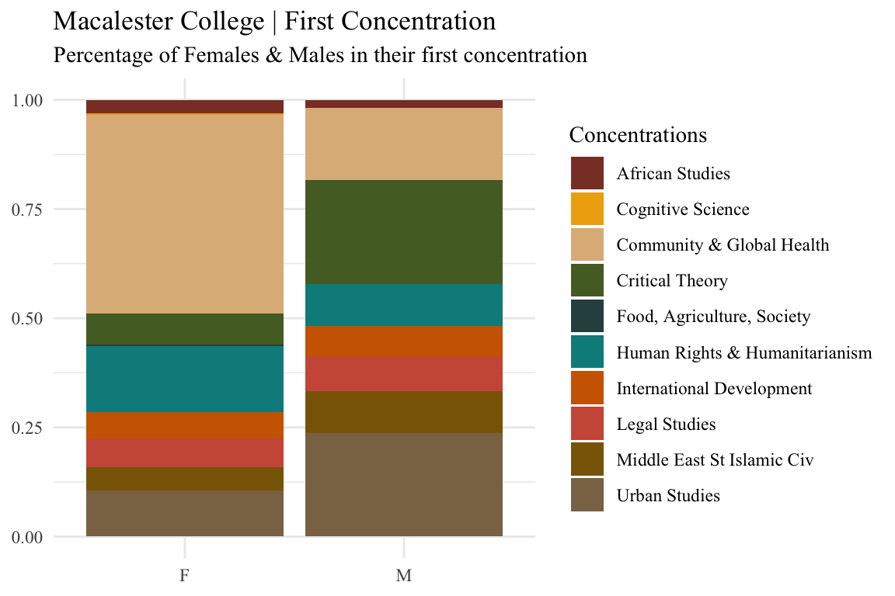
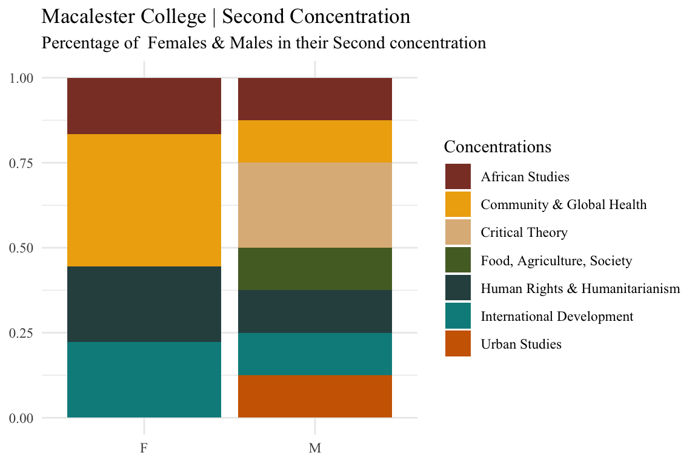
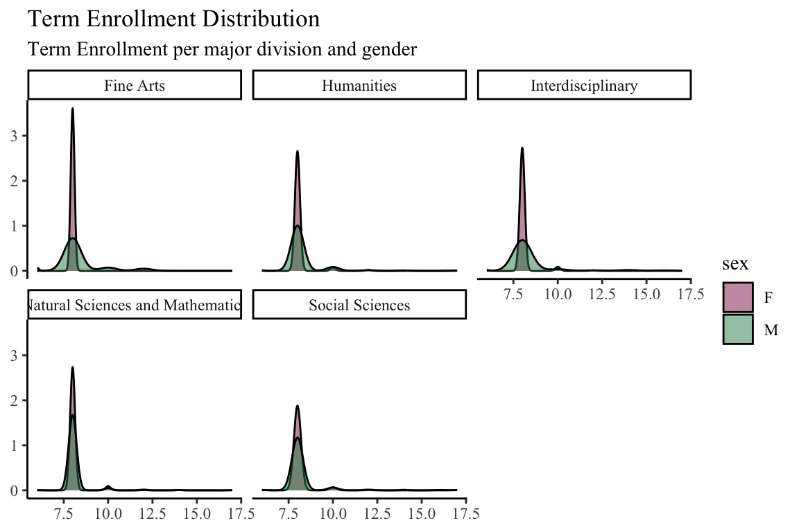

majordata14 <- majordata %>%
select(grad_year, major1_division ,sex) %>%
filter(sex=="F")%>%
na.omit() %>%
group_by(grad_year, major1_division) %>%
summarize(total = sum(n())) %>%
mutate(percentage = 100*total/sum(total))
library(plotly)
p <- ggplot(majordata14, aes(x= grad_year, y =percentage, color=major1_division)) +
geom_point(aes(shape=major1_division )) +
geom_line(aes(group = major1_division , color=major1_division)) +
labs(x=NULL, y= NULL) +
scale_color_manual(values = c("coral4", "darkorange3", "darkgoldenrod2" , "darkcyan", "darkolivegreen"))+
ggtitle("<span style='font-size: 18pt;'>Macalester College | Major Divisions\n<span style='font-size: 12pt;'>Percentage of Females per Major Division & Year") +
theme_classic()+
annotate("text", x= "2013-14", y=31, label="Social Sciences", color="darkolivegreen") +
annotate("text", x= "2016-17", y=24, label="Natural Sciences and Mathematics", color="darkcyan") +
annotate("text", x= "2013-14", y=19, label="Humanities", color="darkorange3") +
annotate("text", x= "2013-14", y=12, label="Interdisciplinary", color="darkgoldenrod2") +
annotate("text", x= "2013-14", y=2, label="Fine Arts", color="coral4") +
theme(legend.position= "none") +
theme(text = element_text(family = "Times New Roman"))
ggplotly(p, width = 600, height = 400) In collaboration with two classmates in our intro to data science course, we centered our final project around differences in declared majors at Macalester College between Men and Woman
We did a lot of data wrangling to find answers to our question, which was, is there a difference between men and woman, in terms of majors/field one joins and has this changed throughout time. Below will be my code for my parts in this project
Collaborators
Lindsay Alaniz, Sicy Wang, and Elinai Alicia Severiano Perez
Products
Major Divisions
For this part I looked into the five major divisions: Social Sciences, Natural Sciences and Mathematics, Humanities, Interdisciplinary, and Fine Arts. I compared them over the years and a graph for women and one for men.
majordata14.0 <- majordata %>%
select(grad_year, major1_division ,sex) %>%
filter(sex=="M")%>%
na.omit() %>%
group_by(grad_year, major1_division) %>%
summarize(total = sum(n())) %>%
mutate(percentage = 100*total/sum(total))
p1 <- ggplot(majordata14.0, aes(x= grad_year, y =percentage, color=major1_division )) +
geom_point(aes(shape=major1_division)) +
geom_line(aes(group = major1_division , color=major1_division)) +
labs(x=NULL, y= NULL) +
scale_color_manual(values = c("coral4", "darkorange3", "darkgoldenrod2" , "darkcyan", "darkolivegreen"))+
ggtitle("<span style='font-size: 18pt;'>Macalester College | Major Divisions \n<span style='font-size: 12pt;'>Percentage of Males per Major Division & Year") +
theme_classic()+
annotate("text", x= "2013-14", y=40, label="Social Sciences", color="darkolivegreen") +
annotate("text", x= "2014-15", y=27, label="Natural Sciences and Mathematics", color="darkcyan") +
annotate("text", x= "2014-15", y=15, label="Humanities", color="darkorange3") +
annotate("text", x= "2017-18", y=8, label="Interdisciplinary", color="darkgoldenrod2") +
annotate("text", x= "2013-14", y=2, label="Fine Arts", color="coral4") +
theme(legend.position= "none") +
theme(text = element_text(family = "Times New Roman"))
ggplotly(p1, width = 600, height = 400) Concentrations
For this part I looked into the different concentrations offered at Macalester and the enrollment between men and women. Further, I looked into first concentration (as in the first declared by a student) and second concentration
conc <- majordata %>%
filter(concentration_ct == "1" )
conc %>%
ggplot(aes(x=sex, fill= Conc1Desc)) +
geom_bar(position = 'fill') +
scale_fill_manual(values = c("coral4", "darkgoldenrod2" , "burlywood", "darkolivegreen", "darkslategrey", "darkcyan" , "darkorange3", "coral3", "darkgoldenrod4", "burlywood4", "darkorange1")) +
labs(x=NULL, y= NULL , fill= "Concentrations", title ="Macalester College | First Concentration", subtitle = "Percentage of Females & Males in their first concentration" ) +
theme_minimal() +
theme(text = element_text(family = "Times New Roman")) 
conc2 <- majordata %>%
filter(concentration_ct == "2" )
conc2 %>%
ggplot(aes(x=sex, fill= Conc2Desc)) +
geom_bar(position = 'fill') +
scale_fill_manual(values = c("coral4", "darkgoldenrod2" , "burlywood", "darkolivegreen", "darkslategrey", "darkcyan" , "darkorange3", "coral3", "darkgoldenrod4", "burlywood4", "darkorange1")) +
labs(x=NULL, y= NULL , fill= "Concentrations", title ="Macalester College | Second Concentration", subtitle = "Percentage of Females & Males in their Second concentration" ) +
theme_minimal() +
theme(text = element_text(family = "Times New Roman")) 
Term Enrollment
Finally, I looked into the different lengths of term enrollments between men and women, but more specifically, by major division
term.enr <- majordata%>%
filter(major1_division %in% c("Fine Arts" , "Humanities" , "Interdisciplinary" , "Natural Sciences and Mathematics" , "Social Sciences"))
term.enr %>%
ggplot(aes(x=terms_enrl_ct)) +
geom_density(aes(fill=sex) , alpha=0.5) +
facet_wrap(~major1_division) +
scale_fill_manual(values = c( "violetred4", "seagreen4"))+
labs(x=NULL, y= NULL, title = "Term Enrollment Distribution", subtitle = "Term Enrollment per major division and gender") +
theme_classic() +
theme(text = element_text(family = "Times New Roman")) 